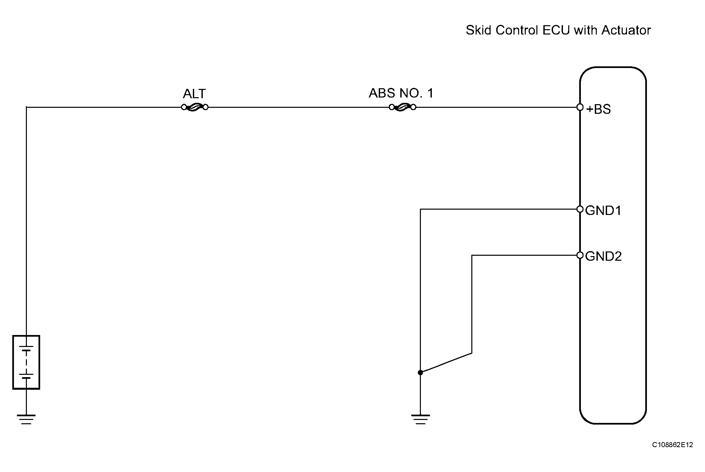

DTC C0226/21 SFR Solenoid Circuit; DTC C0236/22 SFL Solenoid Circuit; DTC C0246/23 SRR Solenoid Circuit; DTC C0256/24 SRL Solenoid Circuit; DTC C1225/25 SMC Solenoid Circuit: Wiring Diagram

Courtesy of © TOYOTA, LICENSE AGREEMENT TMS1002